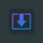

Settings & Preferences
Choose the default image format for downloads
Higher quality = larger file size
Default paper size for PDF exports
Default page orientation
Automatically download the screenshot after capture
Add the page hostname to the filename
Add date and time to the filename
Wait time (ms) between scrolls. Increase for pages with lazy-loaded images.